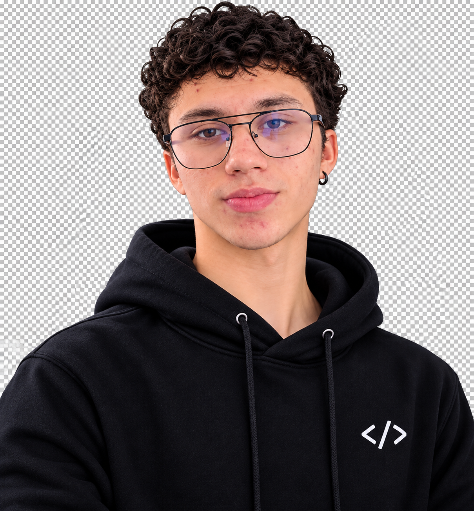

Análisis de imágenes con IA
Proyecto académico orientado al análisis de imágenes de componentes electrónicos mediante inteligencia artificial, para apoyar su identificación y evaluación de reutilización.
Ver repositorio ↗ESTUDIANTE DE INGENIERÍA DE SISTEMAS
Me interesa crear soluciones tecnológicas mediante el desarrollo de software, la inteligencia artificial y el análisis de datos. Disfruto aprender nuevas herramientas y convertir ideas en proyectos funcionales.

CONÓCEME
Soy estudiante de Ingeniería de Sistemas con interés en construir soluciones tecnológicas y seguir creciendo en el mundo del desarrollo y la inteligencia artificial.
Me interesa el desarrollo de software, la programación, la inteligencia artificial y la ciencia de datos. Actualmente fortalezco mis conocimientos en analítica y modelamiento de datos, con interés en la identificación de patrones y la toma de decisiones basada en información.
He participado en proyectos académicos que integran programación, bases de datos, electrónica y automatización. Me considero una persona responsable, comprometida, con facilidad para aprender y disposición para trabajar en equipo.
Mi objetivo es continuar desarrollando mis habilidades, adquirir experiencia y participar en proyectos que aporten soluciones a problemas reales.
TECNOLOGÍAS
Tecnologías y herramientas que he utilizado en proyectos académicos y personales.
MI TRABAJO
Algunos proyectos en los que he aplicado mis conocimientos de programación, desarrollo web, bases de datos y electrónica.
Proyecto académico orientado al análisis de imágenes de componentes electrónicos mediante inteligencia artificial, para apoyar su identificación y evaluación de reutilización.
Ver repositorio ↗Plataforma web para el registro, clasificación, seguimiento y administración de incidentes comunitarios, facilitando la gestión de reportes.
Ver repositorio ↗Diseño de una base de datos relacional para gestionar usuarios, canciones, artistas, listas de reproducción y registros de reproducción.
Ver repositorio ↗Construcción y programación de un brazo robótico controlado mediante Bluetooth, utilizando un microcontrolador ATmega328P y servomotores.
Ver repositorio ↗Desarrollo de una interfaz frontend para un sistema de control y monitoreo, con elementos interactivos que permiten visualizar información del sistema.
Ver repositorio ↗Diseño de una página web informativa para un restaurante, con presentación del menú, ubicación y medios de contacto.
CONTACTO
Estoy abierto a conocer nuevas oportunidades, colaborar en proyectos y seguir aprendiendo.
Escríbeme ↗